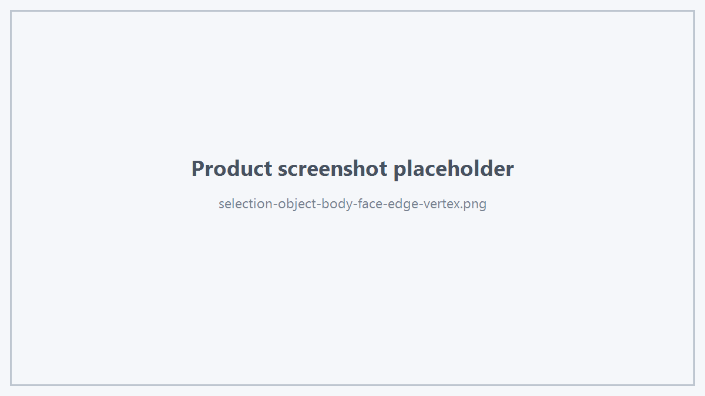
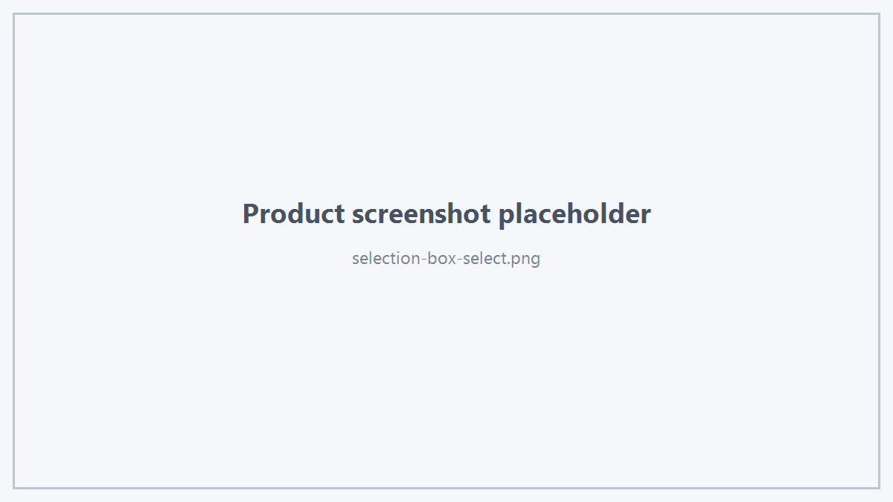
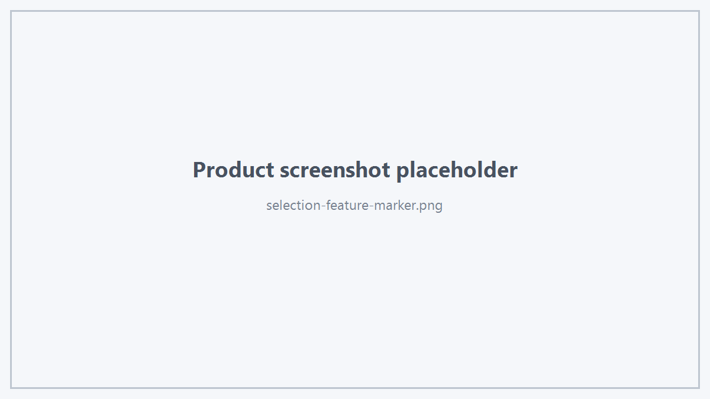

1. Selection Mode
viewer.setSelectionMode(HtsSelectionMode::Face);
支持：
Object
Body
Face
Edge
Vertex

Selection Modes
2. Query Pick
如果只需要查询鼠标下对象，不改变 Selection：
HtsSelectionTarget target;
if (viewer.pickTarget(x, y, target)) {
}
显式指定模式并同时获取世界坐标：
HtsSelectionTarget target;
HtsVec3d worldPoint;
if (viewer.pickTarget(x, y, HtsSelectionMode::Face, target, worldPoint)) {
}
3. Select At
追加选择：
viewer.selectAt(x, y, true);
4. Box Select
viewer.boxSelect(x0, y0, x1, y1);

Box Selection
坐标应与 Viewer 使用的 framebuffer 坐标体系保持一致。
5. Select All
viewer.selectAllVisible();
6. Selection Query
bool has = viewer.hasSelection();
HtsSelectionTarget primary = viewer.selectionTarget();
std::vector<HtsSelectionTarget> all = viewer.selectionTargets();
多选业务逻辑应优先使用 selectionTargets()。
7. Programmatic Selection
std::vector<HtsSelectionTarget> targets;
viewer.setSelectionTargets(targets);
每个 Target 应满足 isValidSelectionTarget()。
8. Clear Selection
9. Selection Display State
HtsSelectionDisplayState state = viewer.selectionDisplayState();
可以查询当前 Selection 显示状态的公开摘要。
10. Selection Dimming
viewer.setSelectionDimEnabled(true);
该接口只控制 Selection Dimming 是否启用，不改变 Selection Targets。
11. Hover
鼠标移动时：
viewer.updateHover(x, y);
查询：
if (viewer.hasHover()) {
HtsSelectionTarget target = viewer.hoverTarget();
}
清除：
12. Feature Point
HtsVec3d point;
HtsFeaturePointKind kind;
if (viewer.pickFeaturePoint(x, y, point, kind)) {
}
Feature Kind：
- Vertex
- EdgeEndpoint
- EdgeMidpoint
- FaceCenter
可以配合 Preview Marker 显示：
viewer.upsertPreviewMarker("SnapPoint", point, kind, false);

Feature Marker
13. Screen Ray
HtsVec3d origin;
HtsVec3d direction;
viewer.screenToWorldRay(x, y, origin, direction);
14. World to Screen
HtsVec3d screenPoint;
viewer.projectWorldToScreen(worldPoint, screenPoint);
 1.18.0
1.18.0